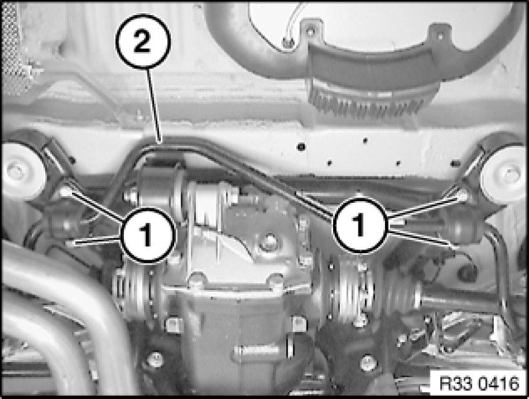

Removing and Installing/Replacing Rear Stabilizer
33 55 000 - Removing and installing/replacing rear stabilizer

Necessary preliminary tasks:
- Remove emergency wheel pan Service and Repair
- Remove stabilizer link on both sides from stabilizer Replacing Stabilizer Links for Stabilizer

Release screws (1).
Remove stabilizer (2) towards rear.
Installation:
Check rubber mount on both sides Replacing Both Rubber Mounts for Stabilizer Mounting, replace if necessary.
Tightening torque 33 55 3AZ Rear Axle - Stabilizer Bar.

Replacement:
Remove rubber mount on both sides from stabilizer Replacing Both Rubber Mounts for Stabilizer Mounting.